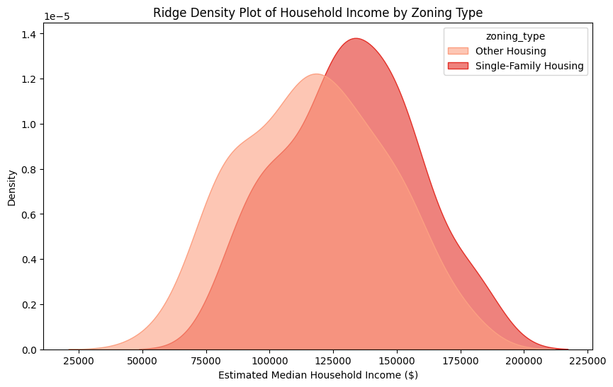
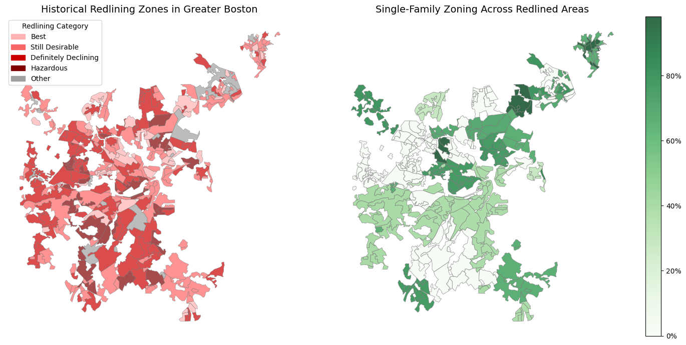

Do historically "Hazardous" areas still have lower household incomes today?
How does historical redlining correlate with contemporary homeownership rates across different racial and ethnic groups in Greater Boston?
Is there a relationship between historical redlining and current zoning regulations in Greater Boston municipalities? Are former "Hazardous" areas more likely to be zoned for multi-family housing today?
The datasets used in this analysis combine historical redlining maps with contemporary zoning and demographic data to examine the long-term effects of discriminatory housing policies in Greater Boston. The redlining dataset, sourced from the Mapping Inequality project, includes spatial data on Home Owners' Loan Corporation (HOLC) neighborhood classifications from the 1930s, categorizing areas as "Best," "Still Desirable," "Definitely Declining," and "Hazardous"designations that systematically shaped investment and mortgage access. The zoning dataset, derived from the MAPC Zoning Atlas, provides insight into modern housing regulations, specifically the proportion of land zoned for single-family housing, which is a key factor in contemporary housing accessibility. Additionally, demographic attributes from U.S. Census and ACS data capture racial composition, homeownership rates, and median income levels at the municipal level. By merging these datasets, we can explore the persistence of redlining's impact on racial segregation, economic inequality, and zoning policies in present-day Boston. This integration enables a spatial and statistical analysis of how historical disinvestment continues to shape racial and economic disparities in homeownership and neighborhood development.
Discoveries & Insights
This bar chart shows the number of areas that fell into each historical redlining category: "Best," "Still Desirable," "Definitely Declining," and "Hazardous." The results indicate that a majority of the areas were labeled as "Still Desirable" and "Definitely Declining." This suggests that while some neighborhoods were seen as stable investments, a significant portion was already experiencing signs of disinvestment and risk, limiting access to homeownership and financial resources for residents (see "The Color of Wealth"). It is crucial to explore whether these classifications still correlate with present-day racial and economic disparities, as redlining shaped long-term patterns of segregation and wealth accumulation. This analysis raises key questions: Do cities with more historically redlined areas still have lower median incomes and homeownership rates today? Are formerly "Hazardous" neighborhoods still struggling economically, or has gentrification reshaped their demographic and financial landscapes? These questions provide an insightful backdrop for further exploration of redlining's enduring impact on urban inequality.
A key question arises: Did these "Best" and "Still Desirable" neighborhoods remain financially stable and predominantly white over time? If these areas continued to receive favorable investment while "Declining" and "Hazardous" zones were excluded, we might expect to see persistent disparities in homeownership, wealth accumulation, and neighborhood conditions. Additionally, we should investigate whether historical "Best" zones align with current high-income, high-property-value areas, while former "Hazardous" zones correlate with lower-income communities today. This insight would help us understand the long-term impact of early housing policies on modern-day segregation and economic inequality.
Do historically "Hazardous" areas still have lower household incomes today?
The redlining map visually represents how different areas were categorized, with "Best" areas clustered in wealthier neighborhoods and "Hazardous" areas concentrated in historically marginalized communities. The clustering of grades suggests that redlining was not random but systematically designed to concentrate investment in select neighborhoods while excluding others. A noticeable pattern is that the "Hazardous" zones tend to be in the same areas that remain low-income today. This visualization raises important insights on the extent to which these historically redlined neighborhoods experienced economic mobility.
I was immediately curious to explore the trend in modern-day median income across the historical redlining categories on average. The results clearly show a downward trend, with historically "Hazardous" areas having significantly lower incomes than "Best" areas. The income gap is not as dramatic as I had initially expected it to be, which leads me to wonder if development has reversed this trend in some "Hazardous" areas, leading to income growth, or if there are formerly "Best" areas that have declined economically.
Next, I wanted to more substantially explore the distributions of median household income per residential category to gain a more nuanced understanding of the relationship between redlining and contemporary socio-economic status. This boxplot illustrates the median household income today for areas historically labeled as Best, Still Desirable, Declining, and Hazardous. The income distributions in "Hazardous" areas are more left-skewed, indicating that a larger share of households still earn lower incomes, with fewer outliers reaching higher income levels. This suggests that economic mobility in these areas remains limited, with only some exceptions. While some formerly redlined areas have experienced redevelopment, the persistent skew in "Hazardous" zones suggests that past redlining decisions have had long-term economic consequences, restricting wealth accumulation and economic mobility in formerly redlined neighborhoods. In contrast, "Best" and "Still Desirable" neighborhoods exhibit a more bimodal income distribution, reflecting a mix of historically wealthy households alongside newer, lower-income residents, possibly due to gentrification, changing housing markets and demographics, or policy-driven shifts.
These visualization raises important questions: How do these income patterns correlate with changes in homeownership rates and racial demographics? Exploring these factors further could provide deeper insights into the long-term spatial consequences of redlining.
How does historical redlining correlate with contemporary homeownership rates across different racial and ethnic groups in Greater Boston?
Last week's reading group and the background readings for this sub-theme highlight that white households in Boston have significantly higher homeownership rates than nonwhite households, with only one-third of U.S. Black households and even lower rates among Dominicans and Puerto Ricans owning homes (see "Exclusionary by Design: An Investigation of Zoning's Use as a Tool of Race, Class, and Family Exclusion in Boston's Suburbs, 1920 to Today"). Given that redlining systematically denied Black and immigrant communities access to home loans, I want to investigate whether areas historically marked as "Hazardous" or "Declining" on redlining maps still exhibit lower homeownership rates today.
This line chart visualizes the current homeownership rate in neighborhoods that were historically categorized under different redlining grades. If redlining has had a lasting impact, we would expect "Best" and "Still Desirable" areas to have the highest homeownership rates, while "Declining" and "Hazardous" areas may still have lower ownership levels, reflecting past barriers to mortgage access. However, we observe that homeownership is highest for formerly "Hazardous" neighborhoods despite being formerly redlined, potentially indicating the effects of redevelopment. Notably, the difference in homeownership rates remain fairly similar (between 3.7 and 4.0) across each residential category. However, the "Hazardous" neighborhoods having comparable homeownership rates still suggests development within the past century. Comparing this data with racial demographics could reveal whether historically redlined areas are still primarily nonwhite or if demographic shifts have occurred due to housing market trends.
This animation illustrates the distribution of homeownership rates among different racial and ethnic groups across historical redlining categories. From these charts, we observe that Non-Hispanic White households have the highest homeownership rates across all redlining categories, with the most concentrated populations in the "Best" and "Still Desirable" areas. This aligns with historical advantages where these high-graded neighborhoods were heavily prioritized for mortgage lending and investment. Conversely, Black (Non-Hispanic), Hispanic/Latino, and Asian households exhibit proportionately higher homeownership rates in the "Definitely Declining" and "Hazardous" areas, which were systematically denied loans and investment opportunities due to redlining policies. Interestingly, even in formerly "Best" neighborhoods, racial disparities persist, indicating that there is a consistent trend in the demographic distribution of the Greater Boston area populations, and that historical advantages have potentially contributed to long-term homeownership inequality.
This animation contains the geographic maps of the Greater Boston area illustrating how current racial distributions (right) align with historical redlining zones (left), revealing the long-term spatial impact of discriminatory housing policies. Racial minorities, including Black, Hispanic/Latino, and Asian populations, remain largely concentrated in historically redlined "Hazardous" and "Definitely Declining" areas, reinforcing the systemic barriers to wealth accumulation and homeownership that redlining created. In contrast, White populations appear more widely distributed across both formerly redlined and non-redlined areas. While "Best" and "Still Desirable" areas remain predominantly White, their presence in some historically redlined areas suggests either population growth, long-term residency or more recent migration linked to gentrification. Ultimately, the maps provide a powerful visual confirmation of redlining's enduring influence, highlighting the need for policies that promote equitable housing access, economic mobility, and long-term neighborhood stability.
Is there a relationship between historical redlining and current zoning regulations in Greater Boston municipalities? Are former "Hazardous" areas more likely to be zoned for multi-family housing today?
Single-family zoning has historically been used to maintain segregation by making housing more expensive and limiting affordability for lower-income residents, who are disproportionately from nonwhite communities. Previous exploration and the background readings suggest that communities of color in Greater Boston tend to have significantly lower median wealth than white households, making it harder to access housing in areas dominated by single-family zoning (see "The Color of Wealth in Boston"). I want to analyze whether municipalities with high percentages of single-family zoning have a higher proportion of white residents and wealthier households.

The ridge density plot reveals a gap in median household income between single-family and multi-family housing zones, although I was surprised to see it is not as substantial as I had hypothesized. However, this still confirms my initial hypothesis that single-family zoning is predominantly associated with higher-income households, reinforcing the idea that restrictive zoning serves as an economic barrier. In contrast, areas zoned for other housing types exhibit a wider range of incomes, suggesting they are more accessible to lower-income residents.
The stacked bar chart comparing racial compositions across single-family and other housing zones highlights stark racial disparities. We observe that single-family zoned areas have a significantly higher percentage of non-Hispanic white residents, whereas multi-family zones show a more racially diverse mix, including higher proportions of Black, Hispanic, and Asian populations. This aligns with historical exclusionary zoning practices, where single-family housing was often used as a mechanism to prevent racial and economic integration. Examining whether nonwhite populations are concentrated in specific municipalities due to legacy effects of redlining could provide further insights.

The geographic map of single-family zoning helps us visualize the stark contrast between neighboring communities in the Greater Boston area. In comparing historical redlining zones, we see that formerly "Best" areas have the highest levels of single-family zoning today, meaning that restrictive policies are still being used to maintain exclusivity and wealth in the form of single-family zones. Additionally, "Hazardous" areas have the lowest levels of single-family zoning. This suggests that these areas were more likely to be converted into multi-family housing or industrial zones over time. Notably, some areas on the outskirts of the Greater Boston area have 0% single-family housing zones, which lends to some skepticism about the effects of data quality and oversimplified sampling strategies. However, this analysis focuses on overall and relative trends with the single-family housing data.
Building off of the first big-picture question we explored, I was curious to see how median income may be a complementary/confounding factor in this analysis. The geographic map of household income highlights wealth disparities across Metro Boston municipalities. Higher-income areas correlate with high single-family zoning, reinforcing patterns of economic segregation. The sharp gradients of household income across municipalities suggests that lower-income areas have been zoned more aggressively for multi-family housing, effectively relegating affordable housing to certain municipalities while wealthier areas maintain restrictive zoning. This raises a policy question: Are municipalities using zoning laws to control the socio-economic composition of their communities? We do not have the data to support the exploration of this question yet.
Summary
From this analysis, I have learned that historically "Hazardous" areas still have lower median incomes than "Best" neighborhoods, with left-skewed distributions indicating persistent economic struggles. While some have seen income growth, this is often due to gentrification rather than true mobility for long-term residents. Redlining's legacy continues to restrict wealth accumulation and economic opportunity for affected communities.
White households maintain higher homeownership rates across all redlining categories, while Black, Hispanic, and Asian groups face continued barriers even in historically "Best" areas. Surprisingly, homeownership rates have risen most in "Hazardous" areas, likely due to redevelopment and demographic shifts, though this may not benefit original residents. Formerly redlined areas remain racially segregated, reinforcing historical exclusion.
Zoning laws reflect redlining's legacy, with "Best" areas still dominated by single-family zoning, limiting access for lower-income and nonwhite residents. "Hazardous" areas allow more multi-family housing, aligning with urban density policies but also reflecting historic disinvestment. Single-family zoning correlates with wealthier, whiter areas, showing how exclusionary practices persist, maintaining segregation and economic barriers in modern housing policy.
This analysis is limited by the granularity of data, as Census and ACS figures provide municipality-level insights rather than neighborhood or block-level trends. Additionally, while strong correlations exist between historical redlining and modern disparities, causation cannot be definitively proven, as factors like policy changes, gentrification, and economic shifts also influence outcomes. The changing demographics of neighborhoods further complicate the analysis, making it difficult to isolate redlining's direct long-term effects. Notably, income growth in some formerly "Hazardous" areas may reflect gentrification rather than true economic mobility for long-term residents. Future research should explore timeseries data, mortgage lending disparities, property value trends, displacement risks, and school funding inequalities to deepen our understanding. Evaluating zoning reforms and affordable housing policies can also reveal which interventions have effectively mitigated the lasting impact of redlining.